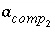
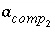
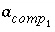
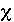
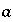
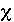
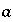
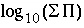

Explanation
Line 0: SOLID_SOLUTIONS [ number ] [ description ]
SOLID_SOLUTIONS is the keyword for the data block. Optionally, SOLID_SOLUTION.
number --Positive number to designate the following solid-solution assemblage and its composition. A range of numbers may also be given in the form m-n , where m and n are positive integers, m is less than n , and the two numbers are separated by a hyphen without intervening spaces. Default is 1.
description --Optional comment that describes the surface assemblage.
solid-solution name --User-defined name of a solid solution.
Line 2: -comp phase name, moles
-comp--Identifier indicates a component of an ideal solid solution is defined. Component is part of the solid solution defined by the last Line 1 encountered. Optionally, comp, component, or -c[ omponent].
phase name --Name of the pure phase that is a component in the solid solution. A phase with this name must have been defined in a PHASES data block.
moles --Moles of the component in the solid solution.
Line 3: -comp1 phase name, moles
-comp1--Identifier indicates the first component of a nonideal, binary solid solution is defined. The component is part of the solid solution defined by the last Line 1 encountered. Optionally, comp1.
phase name --Name of the pure phase that is component 1 of the nonideal solid solution. A phase with this name must have been defined in a PHASES data block.
moles --Moles of the component in the solid solution.
Line 4: -comp2 phase name, moles
-comp2--Identifier indicates the second component of a nonideal, binary solid solution is defined. The component is part of the solid solution defined by the last Line 1 encountered. Optionally, comp2.
phase name --Name of the pure phase that is component 2 of the nonideal solid solution. A phase with this name must have been defined in a PHASES data block.
moles --Moles of the component in the solid solution.
Line 5: -temp temperature in Celsius
-temp--Temperature at which excess free-energy parameters are defined, in Celsius. Temperature, either temp ( tempc) or tempk, is used if excess free-energy parameters are input with any of the following options: -gugg_nondim, -activity_coefficients, -distribution_coefficients, -miscibility_gap, -spinodal_gap, -alyotropic_point, or -margules. Optionally, temp, tempc, or -t[ empc]. Default is 25 o C.
Line 6: -tempk temperature in Kelvin
-tempk--Temperature at which excess free-energy parameters are defined, in Kelvin. Temperature, either temp ( tempc) or tempk, is used if excess free-energy parameters are input with any of the following options: -gugg_nondim, -activity_coefficients, -distribution_coefficients, -miscibility_gap, -spinodal_gap, -alyotropic_point, or -margules. Optionally, tempk. Default is 298.15 K.
Line 7: -Gugg_nondim a 0 , a 1
-Gugg_nondim--Nondimensional Guggenheim parameters are used to calculate dimensional Guggenheim parameters. Optionally, gugg_nondimensional, parms, -g[ ugg_nondimensional], or -p[ arms].
a 0 --Guggenheim a 0 parameter, dimensionless. Default is 0.0.
a 1 --Guggenheim a 1 parameter, dimensionless. Default is 0.0.
-Gugg_kJ--Guggenheim parameters with dimensions of kJ/mol define the excess free energy of the nonideal, binary solid solution. Optionally, gugg_kJ, or -gugg_k[ J].
g 0 --Guggenheim a 0 parameter, kJ/mol. Default is 0.0.
g 1 --Guggenheim a 1 parameter, kJ/mol. Default is 0.0.
Line 9:
-activity_coefficients  , 
,
x
1
, x
2
, 
,
x
1
, x
2
-activity_coefficients--Activity coefficients for components 1 and 2 are used to calculate dimensional Guggenheim parameters. Optionally, activity_coefficients, or -a[ ctivity_coefficients].
 --Activity coefficient for component 1 in the solid solution. No default.
 --Activity coefficient for component 2 in the solid solution. No default.
--Activity coefficient for component 2 in the solid solution. No default.
x
1
--Mole fraction of component 2 for which  applies. No default.
applies. No default.
x
2
--Mole fraction of component 2 for which  applies. No default.
applies. No default.
Line 10:
-distribution_coefficients  ,
,  ,
x
1
,
x
2
,
x
1
,
x
2
-distribution_coefficients--Two distribution coefficients are used to calculate dimensional Guggenheim parameters. Optionally, distribution_coefficients, or -d[ istribution_coefficients].
 --Distribution coefficient of component 2 at mole fraction
x
1
of component 2, expressed as
--Distribution coefficient of component 2 at mole fraction
x
1
of component 2, expressed as  , where 
is the mole fraction in the solid and 
is the aqueous activity. No default.
, where 
is the mole fraction in the solid and 
is the aqueous activity. No default.
 --Distribution coefficient of component 2 at mole fraction
x
2
of component 2, expressed as above. No default.
--Distribution coefficient of component 2 at mole fraction
x
2
of component 2, expressed as above. No default.
x
1
--Mole fraction of component 2 for which  applies. No default.
applies. No default.
x
2
--Mole fraction of component 2 for which  applies. No default.
applies. No default.
Line 11: -miscibility_gap x 1 , x 2
-miscibility_gap--The mole fractions of component 2 that delimit the miscibility gap are used to calculate dimensional Guggenheim parameters. Optionally, miscibility_gap, or -m[ iscibility_gap].
x 1 --Mole fraction of component 2 at one end of the miscibility gap. No default.
x 2 --Mole fraction of component 2 at the other end of the miscibility gap. No default.
Line 12: -spinodal_gap x 1 , x 2
-spinodal_gap--The mole fractions of component 2 that delimit the spinodal gap are used to calculate dimensional Guggenheim parameters. Optionally, spinodal_gap, or -s[ pinodal_gap].
x 1 --Mole fraction of component 2 at one end of the spinodal gap. No default.
x 2 --Mole fraction of component 2 at the other end of the spinodal gap. No default.
Line 13: -critical_point x cp , t cp
-critical_point--The mole fraction of component 2 at the critical point and the critical temperature (Kelvin) are used to calculate dimensional Guggenheim parameters. Optionally, critical_point, or -cr[ itical_point].
x cp --Mole fraction of component 2 at the critical point. No default.
t cp --Critical temperature, in Kelvin. No default.
Line 14: -alyotropic_point x aly , 
-alyotropic_point--The mole fraction of component 2 at the alyotropic point and the total solubility product at that point are used to calculate dimensional Guggenheim parameters. Optionally, alyotropic_point, or -al[ yotropic_point].
x aly --Mole fraction of component 2 at the alyotropic point. No default.
 --Total solubility product at the alyotropic point, where
--Total solubility product at the alyotropic point, where  . No default.
. No default.
Line 15: -Thompson wg 2 , wg 1
-Thompson--Thompson and Waldbaum parameters wg 2 and wg 1 are used to calculate dimensional Guggenheim parameters. Optionally, thompson, or -th[ ompson].
wg 2 --Thompson and Waldbaum parameter wg 2 , kJ/mol. No default.
wg 1 --Thompson and Waldbaum parameter wg 1 , kJ/mol. No default.
Line 16: -Margules alpha 2 , alpha 3
-Margules--Margules parameters alpha 2 and alpha 3 are used to calculate dimensional Guggenheim parameters. Optionally, Margules, or -Ma[ rgules].
alpha 2 --Margules parameter alpha 2 , dimensionless. No default.
alpha 3 --Margules parameter alpha 3 , dimensionless. No default.
 (nondimensional Guggenheim parameter) or
(nondimensional Guggenheim parameter) or  (dimensional Guggenheim parameter) will result in skewing the excess free-energy function toward component 2 and, if a miscibility gap is present, it will not be symmetric about a mole fraction of 0.5, but instead will be shifted toward component 2. In the calcite-dolomite example, the positive value of
(dimensional Guggenheim parameter) will result in skewing the excess free-energy function toward component 2 and, if a miscibility gap is present, it will not be symmetric about a mole fraction of 0.5, but instead will be shifted toward component 2. In the calcite-dolomite example, the positive value of  (1.90) results in a miscibility gap extending almost to pure dolomite (mole fractions of miscibility gap are 0.0428 to 0.9991).
(1.90) results in a miscibility gap extending almost to pure dolomite (mole fractions of miscibility gap are 0.0428 to 0.9991).